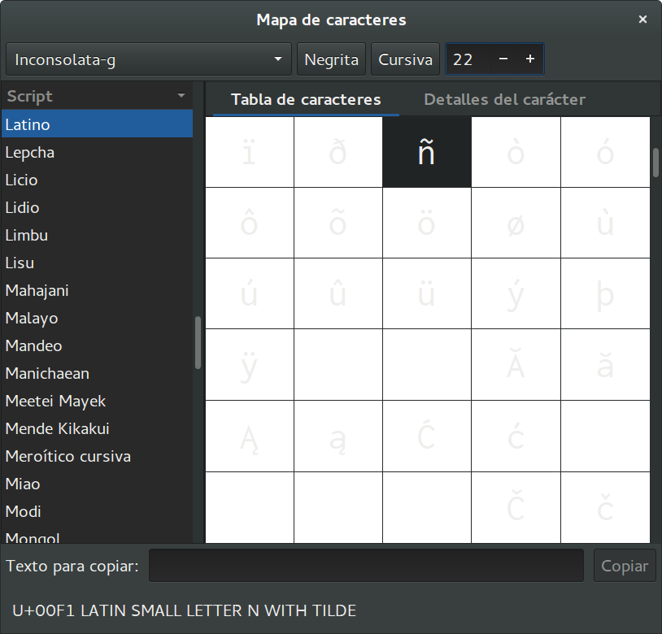

On Encoding To Rule Them All
The key in making great and growable systems is much more to design how its modules communicate rather than what their internal properties and behaviors should be.
— Alan Kay on Messaging
There And Back Again
Let me tell you a story about the letter ñ...
In its journy from your will...
to your computer screen.
Prologue
The ñ is the 15th letter of the Spanish alphabet. It is a n with a diacritical tilde. It's history is tracked to monasteries where the glyph ñ was a shortcut for nn.
In your mind

Everybody has a clear vision of what a ñ. Don't you?
The physical keyboard
The keyboard is agnostic about what letters it
has printed on its own surface. It simply sends the
scancode 0x27.
You can use # showkeys --scancodes to inspect the
raw scan codes.
The abstract keyboard

Scancodes are too close to hardware events, so they are translated into more abstract keycodes.
You can use # getkeycodes display the map between
scancodes and keycodes.
Language Layouts

What is printed on your keyboard must to be known by the system to correctly translate abstract keycodes into keysym symbols.
Here is the mapping table for a QWERTY-Spanish layout.
Text Representation

Once we know the correct symbol, it should be translated to some specific representation, a number in LATIN-1 or Unicode tables.
Use dumpkeys | loadkeys -u -m > unicode.h to
build the table translating keysyms to code points.
Here is the resulting table for the previous mapping.
Text Encoding

Finally, we need an encoding:
a scheme to translate numbers to bits.
Echo

Thus, the intrepid ñ reaches its destination,
turned into simple bytes 0xc3 0xb1. Now it is time
to present itself before the world.
Return to the Representation
Terminals are configured to work with encodings, this case is UTF-8. The terminal know how to turn bytes into a Unicode code point.
Fonts: Numbers to Vector Graphics
The Unicode code point is then looked for inside the font. It maps to a vector graphic depicting the symbol.
The Video Buffer

And finally, the graphic information is put into the video memory to be displayed through the screen.
Credits
Unicode
Text in Programming Languages
Handling Emoji in JavaScript
Further reading
About me

- me
- Salvador de la Puente González
- @salvadelapuente
- My web sites
- http://unoyunodiez.com
http://github.com/lodr